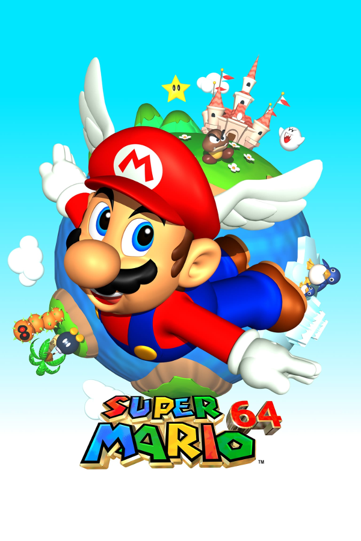

Super Mario 64
Super Mario 64
Details
|  | |
| Playtime | Not Played |
| Last Activity | Never |
| Added | 4/29/2025 4:52:34 |
| Modified | 4/29/2025 23:42:36 |
| Completion Status | Not Played |
| Library | Playnite |
| Source | |
| Platform | Nintendo 64 |
| Release Date | 5/2/2020 |
| Community Score | |
| Critic Score | 94 |
| User Score | |
| Genre | Platform |
| Developer | Nintendo EAD |
| Publisher | Nintendo |
| Feature | Controller Support Full Controller Support |
| Links | PCGamingWiki HowLongToBeat IGDB StrategyWiki MobyGames Wikipedia |
| Tag | Direct control Third Person |
Description
Super Mario 64 is a 1996 platform game developed and published by Nintendo for the Nintendo 64. It was released in Japan and North America in 1996 and PAL regions in 1997. It is the first Super Mario game to feature 3D gameplay, combining traditional Super Mario gameplay, visual style, and characters in a large open world. In the game, Bowser, the primary antagonist of the Super Mario franchise, invades Princess Peach's castle and hides the castle's sources of protection, the Power Stars, in many different worlds inside magical paintings. As Mario, the player collects Power Stars to unlock enough of Princess Peach's castle to get to Bowser and rescue Princess Peach.
Director Shigeru Miyamoto conceived a 3D Super Mario game during the production of Star Fox (1993). Development lasted nearly three years: about one year on design and twenty months on production, starting with designing the virtual camera system. The team continued with illustrating the 3D character models—at the time a relatively unattempted task—and refining sprite movements. The sound effects were recorded by Yoji Inagaki and the score was composed by Koji Kondo.
Super Mario 64 was highly anticipated by video game journalists and audiences, boosted by advertising campaigns and showings at the 1996 E3 trade show. It received critical acclaim, with reviewers praising its ambition, visuals, level design, and gameplay, though some criticized its virtual camera system. It is the best-selling Nintendo 64 game, with nearly twelve million copies sold by 2015.
Retrospectively, Super Mario 64 has been considered one of the greatest video games of all time. Numerous developers have cited it as an influence on 3D platform games, with its dynamic camera system and 360-degree analog control establishing a new archetype for the genre, much as Super Mario Bros. did for side-scrolling platform games. It was remade as Super Mario 64 DS for the Nintendo DS in 2004, and has been ported to other Nintendo consoles since. The game has attracted a cult following, spawning many fangames and mods, a large speedrunning presence, and enduring rumors surrounding game features.
Gameplay
Controls
Super Mario 64 is a 3D platformer in which the player controls the titular character Mario through various courses. Mario's abilities are far more diverse than in previous games. He can walk, run, jump, crouch, crawl, climb, swim, kick, grab objects, and punch using the game controller's analog stick and buttons. He can execute special jumps by combining a regular jump with other actions, including the double and triple jumps, long jump, backflip, and wall jump. The player can adjust the camera—operated by a Lakitu broadcasting Mario—and toggle between first-person and third-person view.
Unlike many of its predecessors, Super Mario 64 uses a health point system, represented by a pie shape consisting of eight segments. If Mario has taken damage, he can replenish his health either by collecting three types of coins—yellow, which replenishes one segment; red, equal to two yellow coins and which replenishes two segments; and blue, equal to five yellow coins and which replenishes five segments, by walking through a spinning heart or by jumping into water. Underwater, Mario's health instead represents how long he can hold his breath, slowly diminishing while underwater and replenishing when he surfaces. Finishing a course grants Mario an extra life for every 50 yellow coins the player collected, and extra life mushrooms are hidden in various places such as trees and poles - they may either chase Mario through the air or fall to the ground and disappear shortly if not collected.
In absence of the power-ups normally found in previous games, such as the Super Mushroom and Fire Flower, three colors of translucent blocks—red, green, and blue—appear throughout many stages. Three switches of the same colors, found in three secret areas located in either stages or the castle itself, turn their corresponding blocks solid and permanently allow Mario to obtain three types of special cap power-ups throughout all of the stages. The Wing Cap allows Mario to fly after doing a triple jump or being shot from a cannon; the Metal Cap makes him immune to enemies, fire, noxious gases, allows him to withstand wind and water currents, perform on-land moves underwater, and have unlimited air capacity underwater; and the Vanish Cap renders him partially immaterial and invulnerable, and allows him to walk through some obstacles. Another implicit powerup is the shell remains after stomping a Koopa Troopa, which Mario can use to run over enemies, and surf on water, lava, and quicksand.
The hub world takes place in Princess Peach's Castle, which consists of three floors consisting of the castle's lobby, the main tower, and a basement, plus a moat and a courtyard outside the castle. The player's main objective is to look for paintings that, when jumped into, bring them into courses containing Power Stars, which upon their collection unlock more of the castle hub world. Each of the fifteen courses has seven Power Stars (six from named missions and one gained by collecting 100 coins in the level), and an additional fifteen are hidden as secrets and as bonuses, for a total of 120 Power Stars in the game.
The courses are filled with enemies as well as friendly creatures that provide assistance or ask favors, such as Bob-omb Buddies, who will allow Mario to access cannons on request. Some Power Stars only appear after completing certain tasks, often hinted at by the name of the course. These challenges include collecting one hundred yellow coins or eight red coins on a stage, defeating a boss, racing an opponent, and solving puzzles. The final level of the game is blocked by "endless stairs" similar to the Penrose stairs concept, but Mario can bypass them by collecting seventy Power Stars. The music in the endless stairs before collecting seventy Power Stars resembles a Shepard scale. There are many hidden mini-courses and other secrets within the castle, which may contain extra Power Stars required for the full completion of the game. If the player returns to the game after collecting all 120 Power Stars, Yoshi can be found on the roof of Princess Peach's Castle, who will give the player a message from the developers, accompanied by one hundred extra lives and an improved triple jump.
Plot
Princess Peach uses a letter to invite Mario to come to her castle for a cake she has baked for him. When he arrives, Mario discovers that Bowser has invaded the castle and imprisoned the princess and her servants within its walls using the power of the castle's 120 Power Stars. The Power Stars are hidden in the castle's paintings, which serve as portals to other worlds where Bowser's minions keep watch over the Stars. Mario explores the castle and enters these worlds, gaining access to more rooms as he recovers more Stars. Mario unlocks three doors to different floors of the castle with keys obtained by defeating Bowser in hidden worlds. After getting at least 70 of the 120 Stars, Mario breaks the curse of the endless stairs that block the entrance to Bowser's final hiding place. After Mario defeats Bowser in the final battle, and Bowser escapes, swearing revenge, he obtains a special Power Star which gives him the Wing Cap, and he flies back to the castle's courtyard. Peach is released from the stained-glass window above the castle's entrance, and she rewards Mario by kissing him on the nose and baking the cake that she had promised him.
Once Mario earns all 120 stars, he is able to access the roof of the castle via a cannon on the castle grounds, where Yoshi awaits him. Yoshi congratulates Mario on securing all 120 stars and grants him 99 extra lives in order to continue playing the game.
Development
In the early 1990s, Super Mario creator Shigeru Miyamoto conceived a 3D Mario design while developing the game Star Fox (1993) for the Super Nintendo Entertainment System. Star Fox used the Super FX graphics chip, which added more processing power; Miyamoto considered using the chip to develop a Super NES game, Super Mario FX, with gameplay based on "an entire world in miniature, like miniature trains". According to engineer Dylan Cuthbert, who worked on Star Fox, Super Mario FX was never the title of a game, but was the codename of the Super FX chip itself. Miyamoto reformulated the idea for the Nintendo 64, not for its greater power, but because its controller has more buttons for gameplay. At the January 1993 Consumer Electronics Show (CES), where Star Fox made its debut, Nintendo's booth demonstrated a talking 3D polygon animation of Mario's head; it returned in the start screen, programmed by Giles Goddard.
Production of Super Mario 64 began on September 7, 1994, at Nintendo's Entertainment Analysis & Development division, and concluded on May 20, 1996. According to Miyamoto, the development team consisted of around fifteen to twenty people. Development began with the characters and the camera system; months were spent selecting a view and layout. The original concept involved the fixed path of an isometric game such as Super Mario RPG, which moved to a free-roaming 3D design, with some linear paths, particularly to coerce the player into Bowser's lair, according to Giles Goddard.
Super Mario 64 is one of the first games for which Nintendo produced its illustrations internally instead of by outsourcing. The graphics were made using N-World, a Silicon Graphics (SGI)-based toolkit. The development team prioritized Mario's movement and, before levels were created, tested and refined Mario's animations on a simple grid. The 3D illustrations were created by Shigefumi Hino, Hisashi Nogami, Hideki Fujii, Tomoaki Kuroume, and Yusuke Nakano, and the game was animated by co-director Yoshiaki Koizumi and Satoru Takiwaza. Yōichi Kotabe, illustrator and character designer for the Mario series, made a 3D drawing of Mario from various angles and directed the creation of the character models. In an interview with The Washington Post, Yoshiaki Koizumi recalled that his challenge was animating the 3D models without any precedents. To assist players with depth perception, the team positioned a faux shadow directly beneath each object regardless of the area's lighting. Yoshiaki Koizumi described the feature as an "iron-clad necessity" which "might not be realistic, but it's much easier to play".
Miyamoto's guiding design philosophy was to include more details than earlier games by using the Nintendo 64's power to feature "all the emotions of the characters". He likened the game's style to a 3D interactive cartoon. Some details were inspired by the developers' personal lives; for example, the Boos are based on assistant director Takashi Tezuka's wife, who, as Miyamoto explained, "is very quiet normally, but one day she exploded, maddened by all the time Tezuka spent at work".
Super Mario 64 was first run on an SGI Onyx emulator, which only emulated the console's application programming interface and not its hardware. The first test scenario for controls and physics involved Mario interacting with a golden rabbit, named "MIPS" after the Nintendo 64's MIPS architecture processors; the rabbit was included in the final game as a Power Star holder. Super Mario 64 features more puzzles than earlier Mario games. It was developed simultaneously with The Legend of Zelda: Ocarina of Time but, as Ocarina of Time was released more than two years later, some puzzles were taken for Super Mario 64. The developers tried to include a multiplayer cooperative mode, whereby players would control Mario and his brother Luigi in split-screen. Nevertheless, hardware constraints and the developers' inability to implement the mode satisfactorily led to its removal.
The music was composed by veteran composer Koji Kondo, who created new interpretations of the familiar melodies from earlier media as well as new material. Yoji Inagaki was responsible for the sound design, tasked with producing hundreds of sound effects. He and Kondo felt that music and sound effects were equally important. According to Inagaki, the average Nintendo 64 game had about 500 sound effects, and made comparisons to Ocarina of Time, with 1,200, and The Legend of Zelda: Majora's Mask, with 2,000.
Super Mario 64 is one of the first games to feature Charles Martinet as the voice of Mario, and Leslie Swan—then senior editor of Nintendo Power and English localizer for Super Mario 64—as the voice of Princess Peach.
Release
Super Mario 64 was first shown as a playable prototype in November 1995 at Nintendo Space World. This version was only fifty percent complete, and only about two percent of texture mapping was finished. It featured thirty-two courses. Miyamoto had hoped to create more, possibly up to forty, but was ultimately reduced to fifteen. According to Nintendo of America chairman Howard Lincoln, Miyamoto's desire to add more was a major factor in the decision to delay the Nintendo 64 release from Christmas 1995 to Summer 1996. Nintendo president Hiroshi Yamauchi later said: "Game creators can finish games quickly if they compromise. But users have sharp eyes. They soon know if the games are compromised. [Miyamoto] asked for two more months and I gave them to him unconditionally". The game was later shown at E3 1996 with multiple Nintendo 64s set up for people to play. According to Giles Goddard, the stress of the project caused some programmers to quit or move to different departments.
Advertising and sales
Peter Main, Nintendo's vice president of marketing at the time, stated Super Mario 64 was meant as the killer app for the Nintendo 64. The US$20 million marketing campaign included videotapes sent to more than five hundred thousand Nintendo Power subscribers and advertisements shown on MTV, Fox, and Nickelodeon.
Super Mario 64 was officially released in Japan in June 1996, North America in September, and in Europe and Australia in March 1997. During its first three months of sale in North America, it sold more than two million copies and grossed $140 million in the United States, becoming the best-selling video game of 1996. It was also the best-selling game overall from 1995 to 2002. During the first three months of 1997, it was the second-best-selling console game at 523,000 units. By early 2001, it had sold 5.5 million units, and 5.9 million by September 2002.
At the 1999 Milia festival in Cannes, Super Mario 64 won a Gold ECCSELL prize for earning revenues above €21 million in the European Union in 1998. It had become the second most popular game on Wii's Virtual Console by June 2007, behind Super Mario Bros. By March 2008, Super Mario 64 sold 11.8 million copies worldwide, being the best-selling Nintendo 64 game. By 2015, Super Mario 64 was the 12th most sold Mario game, with 11.91 million copies sold.
Reception
Critical reviews
Super Mario 64 received enthusiastic pre-release reception. GamePro commented on the 1995 prototype's smoothness, and how the action "was a blast", despite the game being only fifty percent complete at the time. Ed Semrad of Electronic Gaming Monthly agreed, praising the new 3D animation of Mario characters shown in only 2D before. Larry Marcus, a source analyst for Alex. Brown & Sons, recalls Super Mario 64 being the most anticipated game of E3 1996, remembering a field of teenagers "jostling for a test run".
Super Mario 64 received critical acclaim, with a score of 94 out of 100 from review aggregator website Metacritic based on thirteen reviews, and a score of 96% from review aggregator GameRankings, which ranked it the eighteenth best video game of all time based on twenty-two reviews.
The design, variety of controls and use of 3D gameplay received praise from video game publications. Maximum found its strongest points were the sense of freedom and its replayability, comparing it to Super Mario World and citing its similar gimmick of allowing access to new areas upon finding switches. One of GameFan's four reviewers, E. Storm, cited the water levels as "overjoy[ing]" and showed how Super Mario 64 delved into an "entirely new realm of gaming". Official Nintendo Magazine called it "beautiful in both looks and design". Doug Perry of IGN agreed that it transitioned the series to 3D perfectly. Electronic Gaming Monthly discussed the levels in their initial review, praising them for their size and challenge, and later ranked it the fourth best console game of all time, arguing that it had breached the entire genre of 3D gaming while working virtually flawlessly.
Computer and Video Games editor Paul Davies praised the 3D environment, and said that it enhanced the interaction, and described the control scheme as intuitive and versatile. Total! hailed the gameplay as being so imaginative and having such variety that their reviewers were still "hooked" after one month. Writing for AllGame, Jonti Davies commented on the diversity of the gameplay and the abundance of activities found in each course. Nintendo Life's Corbie Dillard agreed, calling the variety the game's "greatest genius". Writing for GameRevolution, Nebojsa Radakovic described Super Mario 64 as one of the few "true" 3D platform games. N64 Magazine likened it to an enormous playground which was a pleasure to experiment in, but opined that the exploration element was slightly brought down by how many hints and tips there were. Victor Lucas of EP Daily agreed, praising the freedom, but suggesting players "skip all the sign posts".
Super Mario 64 also received praise for its graphics. GameSpot praised the graphics for being "clean yet simple" and not detracting from the details of the game world. GamePro particularly praised the combination of unprecedented technical performance and art design, calling it "the most visually impressive game of all time". Paul Davies described the graphics as "so amazing to see, you find yourself stopping to admire [them]". Jonti Davies called the visuals phenomenal, and the frame rate respectable.[87] Doug Perry found the graphics simple but magnificent, a sentiment shared by Next Generation. Hyper reviewer Nino Alegeropoulos called it the best-looking console game to date and opined that its high resolution and frame rate for the time made it look "infinitely better than a cartoon". Total! said that the graphics' lack of pixellation and jagged edges made it look like they were from a "top of the range graphics workstation".
The camera system received mixed reviews. Next Generation found that Super Mario 64 was less accessible than previous Mario games, frustrated by the camera's occasional erratic movements and lack of optimal angle. Nebojsa Radakovic and Doug Perry added that the camera was sometimes blocked by or went through objects. Electronic Gaming Monthly's Dan Hsu, Shawn Smith, and Crispin Boyer all removed half a point from their scores, claiming that the camera sometimes could not move to a wanted angle or rapidly shifted in an undesirable manner, a criticism that returned in Electronic Gaming Monthly's 100 Best Games of All Time list. Game Informer stated in their 2007 re-review by present-day standards the camera "would almost be considered broken". Nintendo Power also noted the learning curve of the shifting camera. In contrast, Corbie Dillard claimed that the camera did not have any problems, and that it succeeded at helping the player traverse complex environments. This sentiment was shared by Total!, claiming that there were very few occasions where the camera was at a suboptimal angle. Paul Davies acknowledged that he was critical of the camera, saying that in some occasions it was difficult to position ideally, but ultimately dismissed it as "one hiccup" of a "revolutionary" game.
Super Mario 64 won numerous awards, including various "Game of the Year" honors by members of the gaming media, and in Nintendo's own best-selling Player's Choice selection. It has been placed high on "the greatest games of all time" lists by many reviewers, including IGN, Game Informer, Edge, Official Nintendo Magazine,[116] Electronic Gaming Monthly, and Nintendo Power. Electronic Gaming Monthly awarded it a Gold award in its initial review, and it won Electronic Gaming Monthly's Game of the Year for both editors' pick and readers' pick, and Nintendo 64 Game of the Year, Adventure Game of the Year, and Best Graphics. At the 1997 Computer Game Developers Conference, it was given Spotlight Awards for Best Use of Innovative Technology, Best Console Game, and Best Game of 1996. Maximum gave it a "Maximum Game of the Month Award" before its international release, ranking it the greatest game the magazine had ever reviewed. Digitiser ranked it the best game of 1997, above Final Fantasy VII as runner-up.
Legacy
Super Mario 64 was key to the early success of and anticipation for the Nintendo 64. Lee Hutchinson, a former Babbage's employee, notes how the game was spurred by a feverish video game press, and how the success of the game defied the rule that a wide variety of launch games was necessary for broad appeal. Eventually, the Nintendo 64 lost much of its market share to Sony's PlayStation, partly due to its cartridge and controller design decisions, which were reportedly implemented by Miyamoto for Super Mario 64.
In 2012, Super Mario 64 was among the 80 entries in the Smithsonian American Art Museum's The Art of Video Games exhibit.
Influence
Super Mario 64 set many precedents for 3D platformers as one of the most influential video games. The game is known for its nonlinear, open freedom, which has been acclaimed by video game developers and journalists. 1Up.com wrote about its central hub world, which provides a safe tutorial and a level selector, and is now a staple of the 3D platformer genre. As the genre evolved, many of the series's conventions were rethought drastically, placing emphasis on exploration over traditional platform jumping, or "hop and bop" action. Though some disputed its quality, others argued that it established an entirely new genre for the series. Its mission-based level design inspired game designers such as GoldenEye 007 (1997) producer and director Martin Hollis and the development team of Tony Hawk's Pro Skater. Dan Houser, a prominent figure in the development of the Grand Theft Auto series, stated, "Anyone who makes 3D games who says they've not borrowed something from Mario or Zelda [of the Nintendo 64] is lying". Square Enix has stated that a coincidental meeting with Disney employees resulted in the creation of the Kingdom Hearts series, inspired by Super Mario 64's use of 3D environments and exploration. Chris Sutherland, who served as the lead designer for Banjo-Kazooie, agreed that Super Mario 64 set the benchmark for 3D platformers and claimed that any other game in the genre on the Nintendo 64 would inevitably be compared with Super Mario 64.
Super Mario 64 introduced a free-floating camera that can be controlled independently of the character. To increase freedom of exploration and fluid control in a 3D world, Super Mario 64 designers created a dynamic virtual video camera that turns and accelerates according to the character's actions. This camera system became the standard for 3D platformers. Nintendo Power praised the game's camera movements along with The Legend of Zelda: Ocarina of Time's addition of the lock-on camera and concluded that the two games were trailblazers for the 3D era. PC Magazine's K. Thor Jensen considers Super Mario 64 to be the first truly realized 3D platformer with the integration of camera control into its core gameplay, which he called the medium's true evolutionary leap.
Super Mario 64's use of the analog stick was novel, offering more precise and wide-ranging character movements than the digital D-pads of other consoles. At the time, 3D games generally only allowed the player to either control the character in relation to a fixed camera angle or in relation to the character's perspective. Super Mario 64's controls, in contrast, are fully analog and interpret a 360-degree range of motion into navigation through a 3D space relative to the camera. The analog stick allows for precise control over subtleties such as running speed. In 2005, Electronic Gaming Monthly ranked Super Mario 64 the most important game since they began publication in 1989, stating that, while there were 3D games before it, "Nintendo's was the first to get the control scheme right".
In July 2021, a pristine, sealed copy of Super Mario 64 was auctioned for $1,560,000, the largest amount ever paid for a video game. Heritage Auctions's video games specialist said, "It seems impossible to overstate the importance of this title, not only to the history of Mario and Nintendo but to video games as a whole".
A sequel was planned for the disk drive add-on, under the codename Super Mario 128. In July 1996, Nintendo insiders stated that Miyamoto was assembling a team consisting mostly of developers who had worked on Super Mario 64. Miyamoto affirmed that work on the sequel had only commenced at the time of the E3 1997 convention. The project was canceled due to its lack of progress and the commercial failure of the Nintendo 64 Disk Drive.
Super Mario 64 successors include Super Mario Sunshine for the GameCube and Super Mario Galaxy for the Wii, building on its core design of power-ups and its 3D, open-ended gameplay. Super Mario Galaxy 2 includes a remake of Super Mario 64's Whomp's Fortress level called Throwback Galaxy. Super Mario 3D Land and Super Mario 3D World are departures from the open-ended design, instead focused on platforming reminiscent of 2D games.
The Nintendo Switch game Super Mario Odyssey returns to Super Mario 64's open design; it includes numerous references to the latter. The 'Mario 64 Suit' and 'Mario 64 Cap', which change Mario's appearance to his in Super Mario 64, can be purchased after completing the main storyline. Additionally, Mario can travel to the Mushroom Kingdom, which includes Princess Peach's Castle and its courtyard. The Kingdom's Power Moons resemble Super Mario 64's Power Stars.
Rumors spread rapidly after the game's release. The most popular was a pervasive rumor that Luigi existed as an unlockable character. In 1996, IGN offered a prize of $100 if a player could find Luigi, to no avail. Fueling the rumor was a very blurry message on a statue in the courtyard of Princess Peach's Castle, thought to say "L is real 2401". This was disproved in 1998, when a fan received a letter from Nintendo that the programmers included the text as a joke and it was not supposed to say anything. In July 2020, 24 years and 1 month after the initial release of Super Mario 64, unused assets for Luigi from the scrapped multiplayer mode were discovered in the game's development files, in an event known as the Nintendo Gigaleak.
Satirical conspiracy theories about the game became popular in the early 2020s. These theories were grouped into an Internet meme of an iceberg known as the "Super Mario 64 iceberg", with less likely theories representing places being placed closer to the bottom of the "ocean". One popular theory was the "Wario Apparition", based on an E3 1996 presentation with Charles Martinet voicing a disembodied Wario head. Some fans believed that the Wario head remained in some copies of the game. Conspiracy theorists have also spread the rumor that "every copy of Super Mario 64 is personalized", claiming that certain bizarre phenomena existed in only certain copies of the game.
In the years since the game's release, players have used glitches to reach previously unreachable parts of the game, including, in 2014, a coin not possible to be collected in ordinary play. Speedrun techniques include the Lakitu skip, a glitch that disables a dialog box explaining camera movement; the Bob-omb clip, which uses a glitch in a Bob-omb's explosion animation to clip through walls; and the backwards long jump glitch, which involves the player performing a repetitive move, the "backwards long jump" (BLJ), allowing Mario to reach very high speed values and has numerous applications in speedrunning; the latter was patched in the Rumble Pak re-release in 1997 as well as the Super Mario 3D All-Stars re-release (with the 3D All-Stars version being based on the Rumble Pak version's codebase). In 2013, YouTuber Vinesauce posted a compilation of various corruptions of the game, replicated with a program named naughty. Another YouTuber, Pannenkoek2012, creates highly technical and analytical videos of Super Mario 64 glitches and mechanics, which have been covered many times by the video game press. The game has also inspired challenges that attempt to beat it with certain restrictions, such as not being able to press the A button, requiring deep understanding about the game's mechanics and bugs. In May 2024, a player named Marbler managed to beat the entire game without pressing the A button.
Super Mario 64 has led to the creation of fan-made remakes, modifications and ROM hacks:
- Super Mario 64: Chaos Edition, a PC-emulated version of the original that loads codes which cause bizarre behavior. The game received coverage after streaming ensemble Vinesauce posted a playthrough of the game.
- Super Mario Run 64, converting the game into a 2.5D running game in the spirit of Super Mario Run
- Super Mario 64 Online, enabling online multiplayer. It was taken down after a copyright strike by Nintendo. It was later reuploaded and renamed to Net64.
- Super Mario 64 Maker, a Super Mario Maker-like level editor
- Super Mario 64 Odyssey, featuring levels based on Super Mario Odyssey and adding its mechanic of possessing enemies by throwing Mario's hat
- Super Mario 64: Last Impact, an original game that incorporates elements from other Mario games, such as the Fire Flower from Super Mario Bros., the F.L.U.D.D. cannon from Super Mario Sunshine, and the Bee Mushroom from Super Mario Galaxy
- Super Mario 64: Ocarina of Time, in which the world of The Legend of Zelda: Ocarina of Time is recreated in Super Mario 64, with new gameplay elements, puzzles, and a story
- Open World Mario 64, a battle royale–style mod set on a huge map made up of all Super Mario 64 levels, in the style of Fortnite Battle Royale and PlayerUnknown's Battlegrounds
- First Person Mario 64, a modification that fixes the camera configuration on first-person, often making the game much more challenging due to how the game demands acrobatic movements, and how the game does not render objects when they're too close to the camera.
- Super Mario 64 FPS, a first-person shooter remake of the original, speedran by YouTubers Falsepog and Alpharad
- Super Mario 64 HD, a high-definition remake of the first level of Super Mario 64, Bob-Omb Battlefield, using the Unity game engine. The project was taken down following a copyright claim by Nintendo.
In 2013, a study was conducted to see the plasticity effects on the human brain after playing Super Mario 64—chosen for its navigation element and the ability to play in a three-dimensional environment—for at least thirty minutes every day for two months. The study concluded that doing the previously mentioned activity caused the gray matter (a major part of the central nervous system) to increase in the right hippocampal formation and the right dorsolateral prefrontal cortex—brain areas thought to contribute to spatial navigation, working memory, and motor planning.